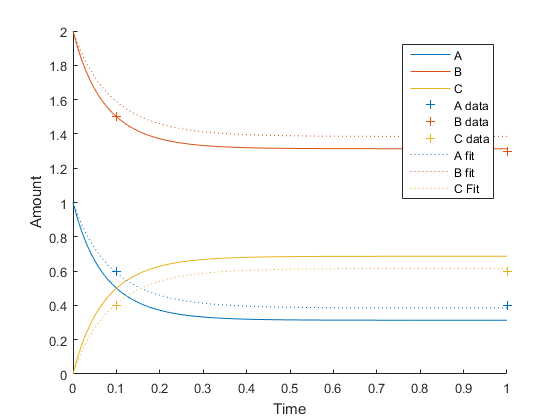

T05 Fitting Parameters
Simple model construction and fitting. Demonstrates setup of fitting problem, performs fit, and displays result. Calculates the linearized parameter uncertainty about the optimal (fit) point.
Contents
Load equilibrium experiment A + B - C
current_path = fileparts(mfilename('fullpath')); m = LoadModelMassAction(fullfile(current_path, '../Testing/Equilibrium.txt'));
Construct experiment
con = experimentInitialValue(m, [], [], [], 'InitialValueExperiment');
Construct objective
Make some test data to fit. Each entry in the vectors below corresponds to a single measurement.
outputList = [1 1 2 2 3 3 ]'; % index of the output this measurement refers to timesList = [0.1 1 0.1 1 0.1 1 ]'; measurements = [0.6 0.4 1.5 1.3 0.4 0.6]'; % Simple error model with a constant and proportional term sd = sdLinear(0.05, 0.1); % Create observation scheme (specifies output and time to observe simulation) % and objective function (specifies data for comparison) obs = observationLinearWeightedSumOfSquares(outputList, timesList, sd, 'DefaultObservation'); obj = obs.Objective(measurements);
Fit
mFit = FitObjective(m, con, obj); % Plot fit results tF = 1; times = linspace(0, tF, 100); simOriginal = SimulateSystem(m, con, tF); simFit = SimulateSystem(mFit, con, tF); figure hold on plot(times, simOriginal.x(times)) ax = gca; ax.ColorOrderIndex = 1; plot(timesList(1:2), reshape(measurements,2,3), '+') ax = gca; ax.ColorOrderIndex = 1; plot(times, simFit.x(times), ':') hold off legend('A','B','C','A data','B data','C data','A fit','B fit','C Fit') xlabel('Time') ylabel('Amount')
Max Line search Directional First-order
Iter F-count f(x) constraint steplength derivative optimality Procedure
0 1 -21.4719 0
1 4 -24.3744 0 0.00385 -94.2 10.8
2 8 -24.3895 0 0.0715 -2.74 5
3 10 -24.4659 0 1 -3.22 3.41
4 12 -24.475 0 1 -1.69 0.66
5 14 -24.4758 0 1 -0.544 0.0863
6 16 -24.4759 0 1 -0.0858 0.0319
Local minimum possible. Constraints satisfied.
fmincon stopped because the predicted change in the objective function
is less than the selected value of the function tolerance and constraints
are satisfied to within the selected value of the constraint tolerance.
Integrating system for InitialValueExperiment...done.
Integrating system for InitialValueExperiment...done.
 Linearized parameter uncertainty about optimal value
F = ObjectiveInformation(mFit, con, obj);